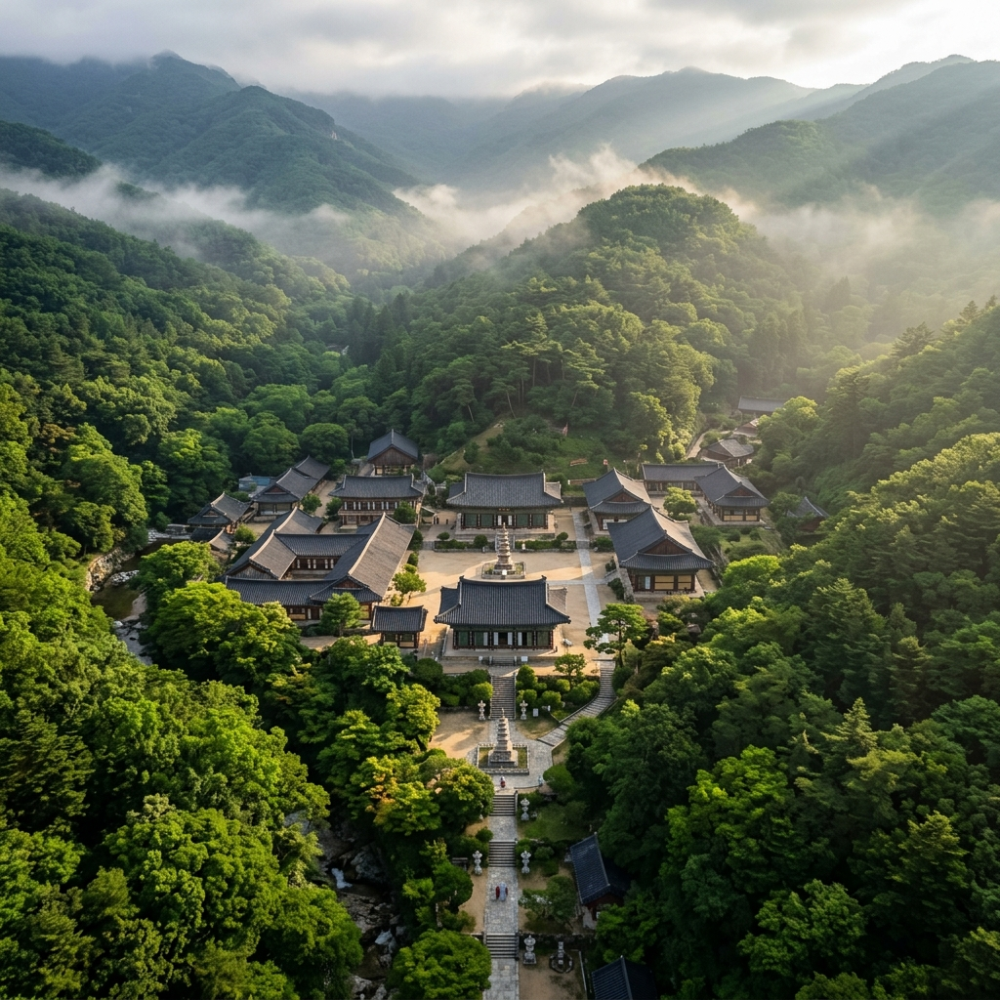
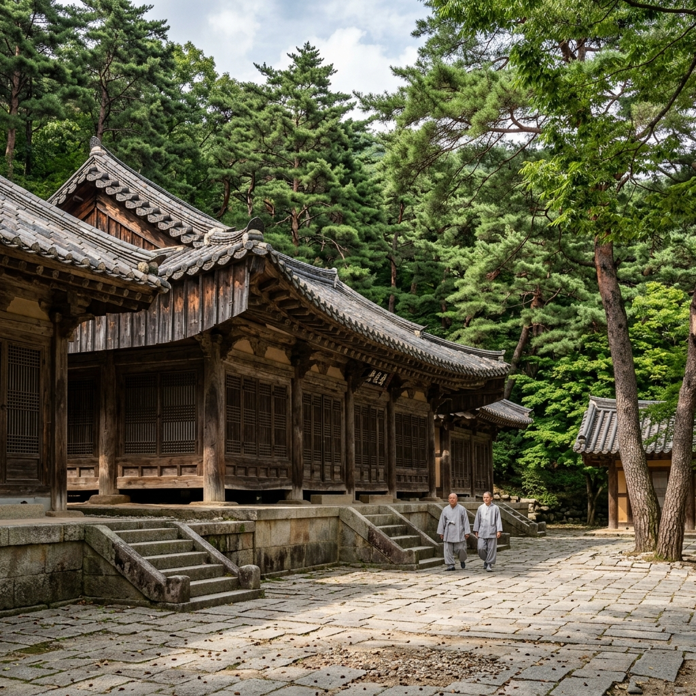
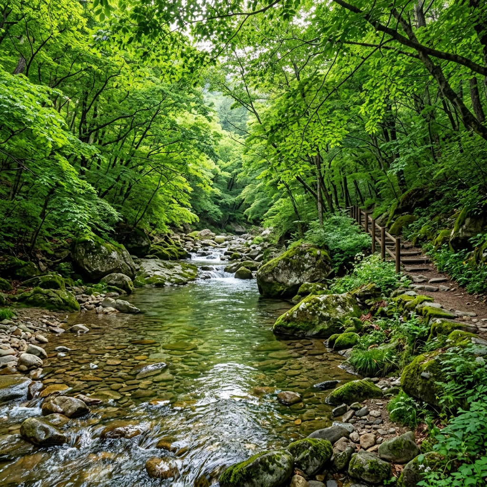

해인사 주차장에서 일주문까지 걸어 올라가는 길부터 시작됩니다.
6월의 오전 9시, 나무 사이로 햇빛이 비스듬히 들어오는 시간대에 해인사 입구에 섰습니다. 기대하지 않았던 것은 입구에서부터 느껴지는 서늘한 공기였습니다. 해발 고도가 올라갈수록 기온이 낮아지는 것은 알고 있었지만, 해인사 경내로 들어서는 순간 온도가 확연히 떨어지는 것을 피부로 느꼈습니다.
일주문을 지나 봉황문·해탈문을 순서대로 통과하며 점점 사찰의 중심부로 들어가는 과정이 흥미로웠습니다. 문 하나를 지날 때마다 속세에서 점점 멀어지는 느낌이랄까요. 주중 오전이라 방문객이 많지 않아 조용히 경내를 걸을 수 있었던 것도 운이 좋았습니다.
문화재 관람료는 성인 기준 3,000원이며, 2023년부터 가야산 국립공원 입장료 자체는 무료화되었습니다. 주차장 이용비는 별도로 발생하며, 해인사 제1·제2 주차장에 자리가 있습니다. 주말 오전에는 혼잡하므로 평일이나 이른 아침 방문을 권합니다.

장경판전 앞에 섰을 때, 솔직히 처음에는 건물이 생각보다 소박하다는 인상이 들었습니다.
하지만 안내판을 읽고 그 안에 담긴 내용을 알게 되자 생각이 완전히 달라졌습니다. 1236년부터 1251년까지 고려 시대 16년에 걸쳐 완성된 팔만대장경은 총 8만 1,258장의 경판으로 이루어진 방대한 불교 경전입니다. 2007년 유네스코 세계기록유산으로 등재된 이 경판들이 수백 년째 온전하게 보존된 이유가 바로 이 장경판전의 설계 덕분이라는 사실이 놀라웠습니다.
장경판전은 1995년 유네스코 세계문화유산으로도 지정된 건물입니다. 창문의 크기와 방향, 바닥의 흙 성분이 정밀하게 계산되어 자연 환기를 통해 온습도를 일정하게 유지합니다. 현대 기술로도 재현하기 어렵다는 평가를 받는 과학적 건축물이 수백 년 전에 이미 완성되어 있었다는 사실에 경외감이 느껴졌습니다.
수다라장각에서는 경판 일부를 유리 너머로 직접 볼 수 있습니다. 경판 한 면에 22행, 한 행에 14글자가 새겨져 있으며, 전체 약 5,200만 자를 손으로 직접 새겼다는 것이 믿기지 않을 정도입니다. 해인사를 방문하면 반드시 수다라장각에 들러 경판을 가까이에서 살펴보시기를 권합니다.
해인사 경내를 전부 둘러보는 데는 여유 있게 잡아도 1시간 30분에서 2시간 정도 필요합니다.
중심 건물인 대적광전은 비로자나불을 주존으로 모시는 법당으로, 해인사의 핵심입니다. 법당 내부는 정교한 탱화와 불상 조각으로 가득 차 있으며, 법당 앞마당에는 크고 작은 전각들이 빼곡하게 자리 잡고 있습니다. 구광루는 경내 입구 쪽에 위치한 이층 누각으로, 위층에서 바라보는 경내 전경이 특히 인상적이었습니다.
6월 녹음이 우거진 계절에는 노송들 사이로 빛이 들어오는 풍경이 너무나 아름다웠습니다. 경내 곳곳에 자리한 수백 년 된 소나무들이 전각과 어우러진 모습은 그 자체로 훌륭한 피사체입니다. 사진에 관심이 있으신 분들은 오전 역광 시간대보다는 오전 10시 이후 순광일 때가 촬영하기 좋습니다.
응진전·명월당·적묵당 등 각 전각마다 내력이 있으므로, 해인사 앱이나 오디오 가이드를 활용하시면 더욱 알찬 관람이 가능합니다. 사찰 내부 예절로는 조용한 언행 유지, 불상 및 문화재 접촉 금지, 지정 구역 외 음식물 섭취 자제 등이 있으며, 사전에 숙지하고 방문하시기 바랍니다.

해인사 탐방 후 소리길을 걸어본 것이 이번 여행에서 가장 기억에 남는 경험이었습니다.
소리길은 해인사 일주문 근처에서 시작해 홍류동 계곡을 따라 약 5.2km 이어지는 완만한 탐방로입니다. 전체 경사가 거의 없어 운동화나 가벼운 트레킹화만 있으면 누구나 무리 없이 완주할 수 있습니다. 이름 그대로 계곡 물소리, 새소리, 바람 소리가 내내 동반하는 길입니다.
홍류동 계곡은 해인사 입구부터 이어지는 약 4km의 계곡입니다. 가을에는 단풍으로 붉게 물든다 하여 '홍류(紅流)'라는 이름이 붙었지만, 6월의 이 계곡은 온통 연초록과 짙은 녹색이 뒤섞인 또 다른 장관을 보여줍니다. 단풍나무, 느릅나무, 오리나무가 계곡 양쪽을 빽빽이 덮어 마치 초록빛 터널 속을 걷는 기분입니다.
계곡물은 6월에도 투명하고 맑습니다. 발을 담그고 싶은 충동이 생기지만, 계곡 생태 보호를 위해 물놀이와 취사는 금지되어 있으니 눈으로만 즐기셔야 합니다. 탐방로 곳곳에 쉼터와 정자가 있어 잠시 앉아 물소리를 들으며 쉬는 것이 가능합니다. 최치원 선생이 은거하며 학문을 닦은 장소로도 전해지는 홍류동 계곡은 자연 경관 이상의 역사적 의미도 담고 있습니다.

가야산 국립공원은 체력과 목적에 따라 고를 수 있는 다양한 탐방로를 갖추고 있습니다.
부담 없이 자연을 즐기고 싶다면 앞서 소개한 소리길(5.2km)이 최선입니다. 경사가 거의 없고, 계곡을 옆에 두고 걸을 수 있어 老弱者와 어린이를 동반한 가족에게도 적합합니다. 왕복 2~3시간 정도면 여유 있게 탐방할 수 있습니다.
적당한 산행을 원하신다면 백운동~해인사 코스(약 3.2km 편도)를 추천드립니다. 경북 성주군 백운동 탐방지원센터에서 출발해 가야산 정상부를 경유한 뒤 해인사 방향으로 하산하는 경로로, 왕복 4~5시간이 소요됩니다. 원시림과 바위 능선이 교대로 나타나 가야산의 다양한 면모를 체험할 수 있습니다.
가야산 정상 칠불봉(1,433m)에 도전하려는 분들을 위한 정상 코스는 해인사 탐방지원센터 기준 왕복 약 9.8km, 5~6시간이 소요됩니다. 맑은 날 정상에서는 지리산·덕유산·비슬산이 보이고 남해 바다도 아련하게 눈에 들어옵니다. 경사가 가파른 구간이 포함되므로 등산화와 여분의 식수 준비는 필수입니다.
6월 탐방 시 주의할 점은, 가야산 정상부 기온이 산 아래보다 5~8도가량 낮다는 것입니다. 얇은 바람막이나 긴소매 상의를 반드시 챙기시고, 오후 2~4시에 소나기가 내리는 날이 종종 있으므로 오전 일찍 산행을 시작하시기를 권장합니다.
해인사에서 차로 약 20분 거리에 대장경 테마파크가 있습니다.
팔만대장경의 역사와 의미를 현대적인 전시 방식으로 풀어낸 체험 공간으로, 어린 자녀를 동반한 가족 여행객에게 특히 권장합니다. 어렵게 느껴질 수 있는 불교 역사를 디지털 영상과 모형을 통해 흥미롭게 이해할 수 있도록 구성된 것이 인상적이었습니다.
가장 인기 있는 프로그램은 경판 인경 체험입니다. 실제 경판에서 탁본을 뜨는 과정을 직접 경험하고, 그 탁본을 기념품으로 가져갈 수 있습니다. 아이들은 물론 어른도 흥미롭게 참여할 수 있는 체험이니 가능하다면 사전 예약을 추천합니다. 입장료는 성인 4,000원이며 주차는 무료입니다.
야외 공원도 넓게 조성되어 있어 테마파크 관람 후 가족이 쉬어가기에도 좋습니다. 6월 초여름에는 공원 잔디와 나무가 청청하게 자라 있어 아이들이 뛰어놀기에도 안전한 환경입니다. 해인사 탐방과 대장경 테마파크 관람을 묶으면 하루 일정이 알차게 채워집니다.
합천은 해인사만 있는 것이 아닙니다.
합천읍 인근에 자리한 합천 영상테마파크는 1920~1980년대 한국 근현대 거리를 실제 크기로 재현한 촬영 세트장으로, 수백 편의 영화와 드라마가 이곳을 배경으로 제작되었습니다. 1930년대 경성 거리, 피란민 촌, 1970년대 다방과 이발소 등이 매우 세밀하게 구현되어 있어, 세트장을 걷는 것만으로도 시간 여행을 하는 듯한 기분이 듭니다.
드라마 팬이라면 자신이 본 작품의 촬영지를 직접 걷는 특별한 경험을 할 수 있고, 역사에 관심 있는 분들에게는 한국 근현대사를 체감하는 공간이 됩니다. 내부에서 시대 의상 대여 체험도 가능하며, 아이들을 동반한 가족에게도 흥미로운 장소입니다.
황강 드라이브는 합천을 관통하는 황강 변을 따라 이어지는 드라이브 코스입니다. 합천댐에서 합천읍 방향으로 이어지는 강변도로를 달리면 물안개와 신록이 어우러진 풍경이 펼쳐집니다. 합천댐 전망대에서는 호수와 산세를 한눈에 조망할 수 있어 인증샷 명소로도 알려져 있습니다. 과도하게 개발되지 않은 합천의 자연이 오히려 진짜 여행의 여유를 선사합니다.
해인사 인근에는 산채비빔밥과 두부 정식을 내는 식당이 여럿 있습니다.
산에서 채취한 제철 나물로 가득 올린 산채비빔밥은 가야산 탐방 후 지친 몸을 회복시키는 데 더할 나위 없이 좋은 식사입니다. 1인 기준 12,000~15,000원 수준으로, 가격 대비 양도 풍부합니다. 고추장을 넣어 슥슥 비벼 먹다 보면 어느새 그릇이 비워집니다.
합천 황강에서 잡히는 은어는 여름철 합천의 특산물입니다. 맑은 강물에서 자란 은어는 담백하고 고소한 맛이 일품으로, 구이나 튀김으로 즐기면 다른 지역에서는 맛보기 어려운 풍미를 경험할 수 있습니다. 합천읍내 황강 변 식당가에서 맛볼 수 있으며, 초여름이 가장 신선한 은어를 즐길 수 있는 시기입니다.
점심은 해인사 인근에서 산채정식으로 해결하고, 저녁은 합천읍으로 내려와 황강 은어구이를 맛보는 일정을 추천드립니다. 두 끼 모두 합천에서만 경험할 수 있는 향토의 맛으로 채울 수 있어 여행의 만족도가 더욱 높아집니다.
처음 방문하는 분들을 위해 실용적인 정보를 한곳에 정리했습니다.
| 주소 | 경남 합천군 가야면 치인리 10 (해인사) |
| 국립공원 입장료 | 무료 (2023년부터 전국 국립공원 무료화) |
| 해인사 관람료 | 성인 3,000원 / 청소년 1,500원 / 어린이 700원 |
| 대장경 테마파크 | 성인 4,000원 / 주차 무료 |
| 운영시간 | 일출~일몰 (계절별 상이, 방문 전 공식 홈페이지 확인 권장) |
| 주차 | 해인사 제1·제2 주차장 유료 이용 |
| 대중교통 | 대구/부산에서 합천 시외버스 → 해인사행 군내버스 환승 |
| 자가용 소요시간 | 대구 약 1시간 / 부산 약 1시간 30분 / 서울 약 3시간 30분 |
준비물 체크리스트도 정리해 두었습니다.
등산화 또는 발편한 운동화(돌계단·자갈길 많음), 얇은 겉옷(정상부 기온 낮음), 충분한 식수(탐방로 내 매점 없는 구간 있음), 자외선 차단제와 모자(6월 햇빛 강함), 현금(관람료·주차비 대비)이 필요합니다.
1,200년의 역사를 지닌 해인사와, 6월 신록이 가득한 가야산 국립공원은 한 번 방문으로 다 담기 어려울 만큼 깊고 풍성한 여행지입니다. 반나절은 해인사 경내와 홍류동 계곡, 나머지 반나절은 대장경 테마파크와 합천읍으로 일정을 나누면 알찬 당일 코스가 완성됩니다. 숙박을 포함한 1박 2일 일정이라면 황강 드라이브와 영상테마파크까지 넉넉히 돌아볼 수 있습니다.